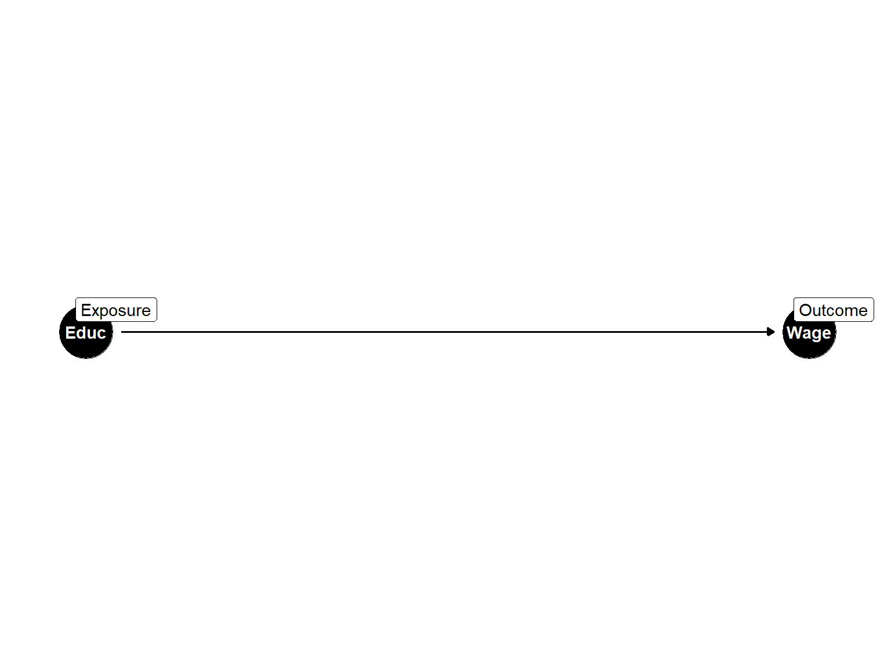
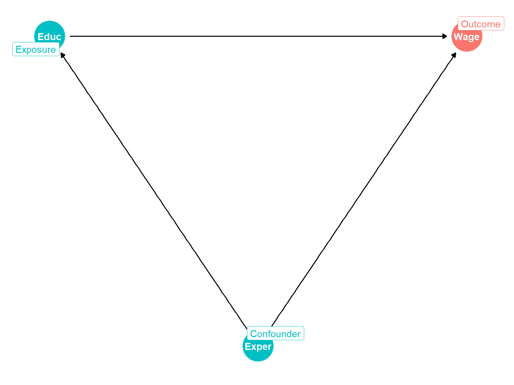
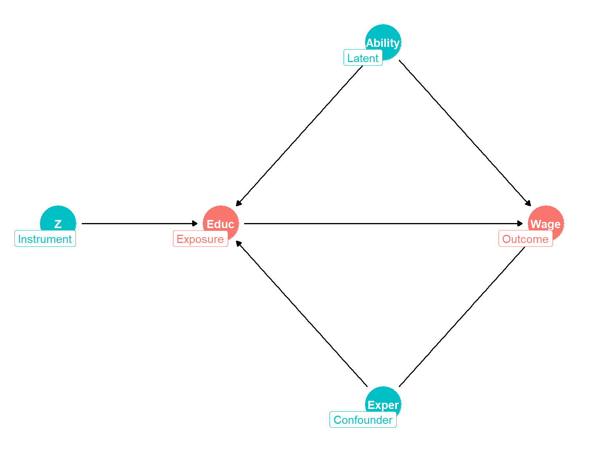

Chapter 15
Instrumental Variables MethodsJames Bang
The effect we wish to estimate is:
\[ln(Wage_i) = \beta_0 + \beta_1Education_i + u_i\]

The code that creates the simple DAG is:
library(ggdag)
library(ggplot2)
WageDag1 <- tidy_dagitty(dagify(
Wage ~ Educ,
coords = coords,
exposure = "Educ",
outcome = "Wage"
))
WageDag1 <-
dag_label(WageDag1,
labels = c("Educ" = "Exposure",
"Wage" = "Outcome"))
ggdag(WageDag1) + theme_dag(legend.position = 'none') + geom_dag_label_repel(aes(label = label))In chapter four, we learned about the problem of omitted variables bias:
\[ln(Wage_i) = \beta_0 + \beta_1Education_i + \beta_2Experience_i + \beta_3Experience_i^2 + u_i\]

WageDag2 <-
tidy_dagitty(
dagify(
Wage ~ Educ + Exper,
Educ ~ Exper,
coords = coords,
exposure = "Educ",
outcome = "Wage"
)
)
WageDag2 <-
dag_label(WageDag2,
labels = c(
"Educ" = "Exposure",
"Wage" = "Outcome",
"Exper" = ifelse(
is_confounder(WageDag2, "Exper", "Educ", "Wage"),
"Confounder",
""
)
))
ggdag_collider(WageDag2) + theme_dag(legend.position = 'none') + geom_dag_label_repel(aes(label = label)) Suppose we have a wage model that looks like:
\[ln(Wage_i) = \beta_0 + \beta_1Education_i + \beta_2Experience_i + \beta_3Experience_i^2 + u_i\] \[Education_i = \gamma_0 + \gamma_1Ability_i + v_i\]
Also suppose that ability is unobservable, but we have a variable that causes education but not wages to vary.

Now, suppose that an unobserved “latent” variable, “ability” affects both wages and education:
WageDag3 <-
tidy_dagitty(
dagify(
Wage ~ Educ + Exper + Ability,
Educ ~ Exper + Ability + Z,
coords = coords,
exposure = "Educ",
outcome = "Wage",
latent = "Ability"
)
)
WageDag3 <-
dag_label(WageDag3,
labels = c(
"Educ" = "Exposure",
"Wage" = "Outcome",
"Exper" = ifelse(
is_confounder(WageDag3, "Exper", "Educ", "Wage"),
"Confounder", ""),
"Ability" = "Latent",
"Z" = "Instrument"
))
WageDag3 <- control_for(WageDag3, "Ability")
ggdag_collider(WageDag3) + theme_dag(legend.position = 'none') + geom_dag_label_repel(aes(label = label))Consider the following model:
\[ln(Wage_i) = \beta_0 + \beta_1Education_i + \beta_2Experience_i + \beta_3Experience_i^2 + \beta_4Black_i\] \[+ \beta_5SMSA_i + \beta_6South_i + \beta_7SMSA_i^{1966} + \sum_{r=2}^R{\delta_rRegion_{r,i}^{1966}} + u_i\]
Store the OLS estimates for this specification as \(card.lm1\).
Estimate a linear model for education as a function of whether the individual lived near a four-year college in 1966 (\(nearc4\)) and all of the other explanatory variables from the wage equation above.
Summarize the results using \(stargazer\).
card.lm1 <- lm(formula, data)
card.firststage <- lm(formula, data)
stargazer(list, type)card.lm1 <- lm(log(wage) ~ educ + exper + I(exper^2) + black + smsa + south + smsa66 + reg662 + reg663 + reg664 + reg665 + reg666 + reg667 + reg668 + reg669, data=card)
card.xhat <- lm(educ ~ nearc4 + exper + I(exper^2) + black + smsa + south + smsa66 + reg662 + reg663 + reg664 + reg665 + reg666 + reg667 + reg668 + reg669, data = card)
stargazer(card.lm1, card.firststage, type = 'text')Create a new named variable in \(card\) called “educhat” equal to the \(fitted.values\) component of the education model (\(card.fiststage\)) we estimated previously.
Substitute these fitted values for the raw education variable in the wage equation.
Use the ivreg function to calculate the “two stage least squares” (2SLS) instrumental-variables estimator for the wage equation, using proximity to a four-year college as the excluded instrument for eucation.
Summarize the results of the OLS estimator and both of the TSLS using \(stargazer\).
card.lm1 <- lm(formula, data)
card.firststage <- lm(formula, data)
stargazer(list, type)card$educhat <- card.xhat$fitted.values
card.lm2 <- lm(log(wage) ~ educhat + exper + I(exper^2) + black + smsa + south + smsa66 + reg662 + reg663 + reg664 + reg665 + reg666 + reg667 + reg668 + reg669, data=card)
card.iv <-ivreg(log(wage) ~ educ + exper + I(exper^2) + black + smsa + south + smsa66 + reg662 + reg663 + reg664 + reg665 + reg666 + reg667 + reg668 + reg669 | nearc4 + exper + I(exper^2) + black + smsa + south + smsa66 + reg662 + reg663 + reg664 + reg665 + reg666 + reg667 + reg668 + reg669, data = card)
stargazer(card.xhat, card.lm1, card.lm2, card.iv, type = 'text')